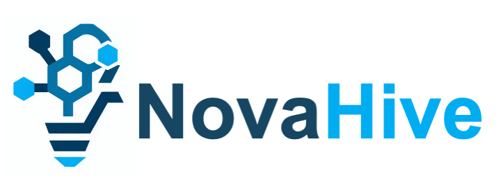

project developed a collaborative platform to improve cyber-attack detection, response, and recovery across organisations while maintaining data privacy. Running from 2019 to 2022 under Horizon 2020, it focused on enabling federated threat intelligence sharing, automated incident response workflows, and machine-learning-based analytics that operate on anonymised data. By combining privacy-preserving data aggregation, visual analytics for SOC operators, and reusable incident response playbooks, SAPPAN allowed companies, national research networks, and security teams to jointly enhance situational awareness and neutralize threats more efficiently without exposing sensitive information.")
SAPPAN Project

Together, We Build the Future of Innovation
Collaboration that Moves the World Forward
We apply state-of-the-art machine learning and AI — including emerging agentic AI approaches — to address real-world challenges. By combining rigorous scientific research with practical industry insights, we develop trustworthy digital solutions. Our work bridges the gap between discovery and application, transforming innovative ideas into impactful technologies that strengthen trust, security, and resilience in the digital age.
We are researchers who collaborate with experts from universities, research laboratories, and industry across EU countries. Our team combines strong academic research backgrounds with industry experience, united by a shared mission to create a safer and smarter digital world. This blend of scientific depth and real-world insight enables us to understand complex challenges and develop solutions that are both innovative and practical.
Our work focuses on advancing research and innovation in cybersecurity and digital resilience. We actively contribute to European research initiatives such as the SAPPAN and PRECINCT projects, collaborating with international partners to strengthen the security and reliability of digital infrastructures. Through our studies, prototypes, and real-world applications, we explore new approaches to threat detection, incident response, and AI-driven security solutions. We regularly publish our findings to share knowledge, inspire collaboration, and drive progress across the research and industrial communities.
Dr. Enda Barrett is an assistant Professor (Lecturer Above the Bar), School of Computer Science —
University of Galway
research.universityofgalway.ie
He works at the intersection of machine learning, cloud and distributed computing, and
cybersecurity. He has over 50 peer-reviewed publications, holds multiple patents, and leads
analytics-driven research in AI and cyber defence. His earlier industrial career included
enterprise-level data integration, acoustic event classification, and ontology design, and since
2015 he
has focused on academic research and teaching.
Key Topics: Machine Learning · Cloud/Distributed Computing · Cybersecurity · Computer Vision · Data
Analytics
A researcher specializing in machine learning for network and
cybersecurity applications. She has worked
across academia and industry, contributing to EU Horizon 2020 projects
SAPPAN and PRECINCT, where she developed host profiling and data mining
frameworks to strengthen critical infrastructure resilience. Her PhD
research at NUI Galway focused on ML-based DDoS mitigation and network
anomaly detection. She also has industry experience as a data scientist,
where she contributed to AI-driven analytics and quality assurance
systems at EdgeTier. Ili's work bridges research and practice to advance secure,
data-driven systems.
Key Topics: Machine Learning · Network Security · Anomaly Detection ·
DDoS Mitigation · AI in Cybersecurity · Data Analytics · LLMs & NLP
· Agentic AI
Get in touch with us to explore collaborations, partnerships, or insights into our ongoing research and innovation projects.
 focused on enhancing the resilience of interconnected
critical
infrastructures across Europe by developing a unified cyber-physical security and
resilience management platform. Funded under the EU’s Horizon 2020 programme (Grant
No.
101021668), PRECINCT ran from October 2021 to October 2023 with a budget of
approximately €9.47 million.
Through a combination of digital twins, serious games, and AI-enabled modelling, the
project helped private and public stakeholders in four large-scale living labs
simulate
cascading multi-hazard scenarios involving water, transport, energy and telecom
infrastructures — enabling real-time decision support, interdependency analysis and
rapid recovery planning for smart cities and regions.
The outcome was a set of ready-to-use tools and services aimed at reducing costs,
improving efficiency and strengthening the safety, security and operational
sustainability of critical infrastructure ecosystems.")

{kind=link}